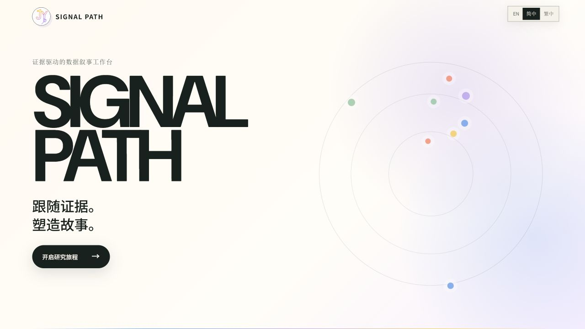
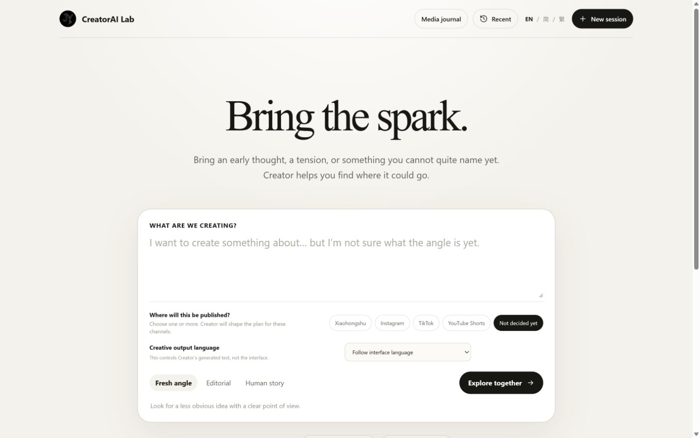

 Signal Path I used Signal Path to reproduce the Vivian Kong case study from After the Medal. I checked 51 days of English and Chinese Wikipedia pageviews and focused on the seven days after her medal final. View case studyTry Signal Path
Prompt Architect I turned a Vivian Kong follow-up into a WeChat cover brief, corrected the generated draft and used the revised brief to make a cover concept. View case studyTry Prompt Architect
 CreatorAI Lab I explored three Instagram treatments for the same story and developed a four-slide carousel around the report’s pageview data. View case studyTry CreatorAI Lab